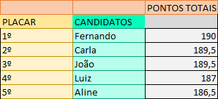
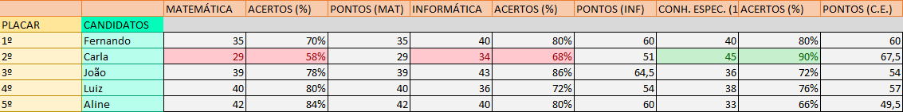
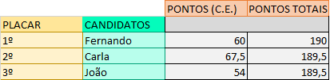
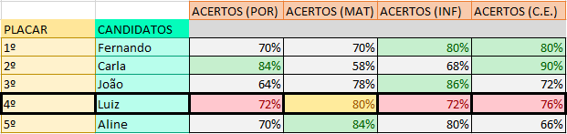
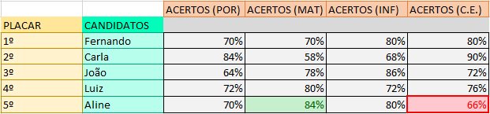

Marcos Vinícius - AI-APW-01
Ao observarmos a pontuação total dos candidatos participantes, após os cálculos de seus devidos acertos e incluindo os pesos das áreas, concluímos que Fernando obteve o melhor resultado.

Embora Fernando não tenha obtido a maior nota em nenhuma das áreas, ele alcançou uma boa média em todas elas, não tendo nenhum percentual de acertos abaixo de 70%, e nas matérias de maior peso, Informática e Conhecimentos Específicos, teve 80% de acertos em ambas, o que levou a atingir o melhor desempenho.
Carla, em segundo lugar, que teve a maior nota em Conhecimentos Específicos (90% de acertos), também teve a menor nota em Matemática e em Informática, impedindo-a de alcançar o primeiro lugar mesmo com o ótimo resultado em Conhecimentos Específicos.

Logo em seguida, João, que obteve a mesma pontuação que Carla, acabou finalizando na terceira posição devido ao critério de desempate: 1º o desempenho total, 2º o desempenho na prova específica e 3º o desempenho da prova de informática. Dessa maneira, como João obteve uma pontuação menor em Conhecimentos Específicos do que Carla, ele finalizou em uma posição abaixo.

Luiz, o quarto colocado, obteve essa posição devido às suas pontuações medianas em todas as matérias. Junto a Fernando, foram os únicos que não obtiveram a maior pontuação em nenhuma das matérias, não atingindo nenhum percentual de acertos acima de 80%. Entretanto, Fernando obteve duas pontuações decentes, com oitenta por cento de acertos, nas duas matérias de maior peso, enquanto Luiz teve apenas 80% de acertos em Matemática, uma matéria de menor peso. Assim, Fernando conquista a primeira colocação e Luiz, a quarta.

Por fim, temos Aline, em último lugar, que obteve a menor porcentagem de acertos na prova específica. Apesar de ter atingido o maior número de acertos em Matemática, também teve o menor número de acertos em Conhecimentos Específicos e que, por possuir um maior peso, definitivamente impactou em sua pontuação total.
